9 Vectors
10 Vectors
10.1 Vectors in 2-Space
We distinguish two important quantities: \(~\) scalars and vectors
- A scalar is simply a real number or a quantity that has magnitude
- A vector is usually described as a quantity that has both magnitude and direction
Equal, Scalar Multiplication
\(~\) 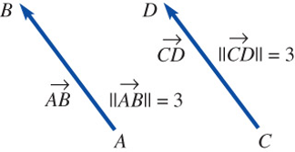
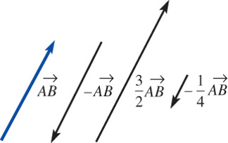
Addition and Subtraction
\(~\) 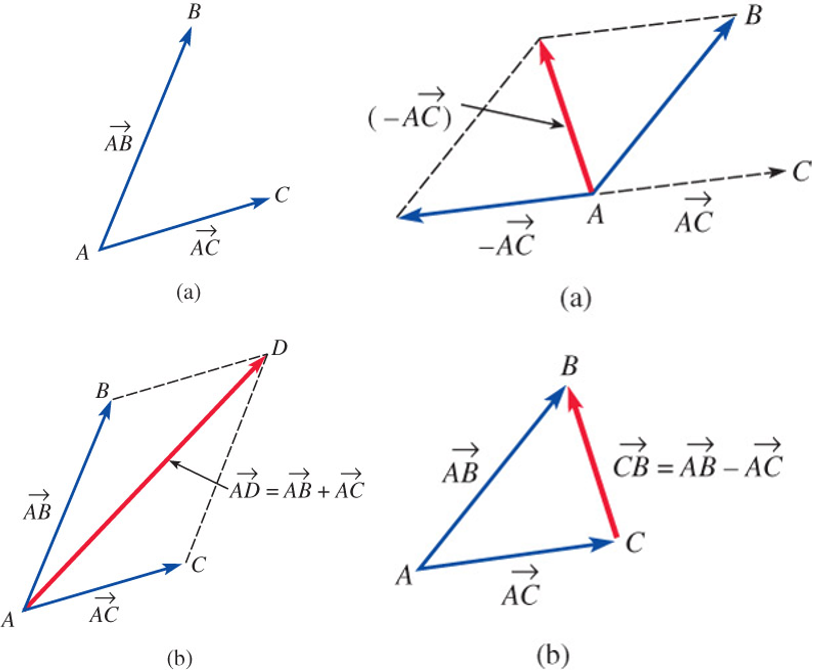
Vectors in a Coordinate Plane
\[\mathbf{a}=\left \langle a_1, a_2 \right \rangle\]
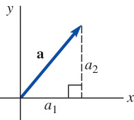
Let \(~\)\(\mathbf{a}=\left \langle a_1, a_2 \right \rangle~\) and \(~\)\(\mathbf{b}=\left \langle b_1, b_2 \right \rangle~\) be vectors in \(\mathbb{R}^2\)
- Equality: \(\text{ }\) \(\mathbf{a} =\mathbf{b}~\) if and only if \(~a_1 =b_1, \;a_2=b_2\)
- Addition: \(\text{ }\) \(\mathbf{a} +\mathbf{b} =\left \langle a_1 +b_1, a_2 +b_2 \right \rangle\)
- Scalar multiplication: \(\text{ }\) \(k\mathbf{a} =\left \langle k a_1, k a_2 \right \rangle\)
Properties of Vectors
\(\mathbf{a} +\mathbf{b} = \mathbf{b} +\mathbf{a}\)
\(\mathbf{a} +(\mathbf{b} +\mathbf{c}) = (\mathbf{a} +\mathbf{b}) +\mathbf{c}\)
\(\mathbf{a} +\mathbf{0} = \mathbf{a}\)
\(\mathbf{a} +(-\mathbf{a}) = \mathbf{0}\)
\(k(\mathbf{a} +\mathbf{b}) = k\mathbf{a} +k\mathbf{b}\)
\((k_1 +k_2)\mathbf{a} = k_1\mathbf{a} +k_2\mathbf{a}\)
\(k_1(k_2 \mathbf{a}) = (k_1 k_2) \mathbf{a}\)
\(1\mathbf{a} = \mathbf{a}\)
\(0\mathbf{a} = \mathbf{0}\)
Magnitude, \(\,\) Unit Vector
\(\begin{aligned} \left \| \mathbf{a} \right \| &= \sqrt{a_1^2 +a_2^2} \;\;\text{ for }\; \mathbf{a} =\left \langle a_1, a_2 \right \rangle \\ \mathbf{u} &= \frac{\mathbf{a}}{\left \| \mathbf{a} \right \|} \end{aligned}\)
\(\mathbf{i}\), \(~\mathbf{j}\) vectors
\(\begin{aligned} \mathbf{a} &= \left \langle a_1, a_2 \right \rangle \\ &=\left \langle a_1, 0 \right \rangle +\left \langle 0, a_2 \right \rangle \\ &= a_1 \left \langle 1, 0 \right \rangle +a_2 \left \langle 0, 1 \right \rangle \\ &= a_1 \mathbf{i} +a_2 \mathbf{j} \end{aligned}\)
\(~\)
Example \(\,\) Use the given figure to prove the given result
\[\mathbf{a} +\mathbf{b} +\mathbf{c}=\mathbf{0}\;~\text{and}\;~\mathbf{a} +\mathbf{b} +\mathbf{c} +\mathbf{d}=\mathbf{0}\]
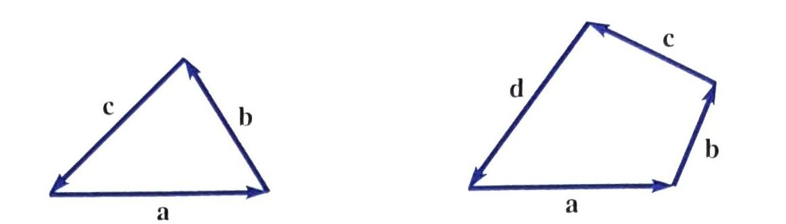
\(~\)
10.2 Vectors in 3-Space
\(~\)
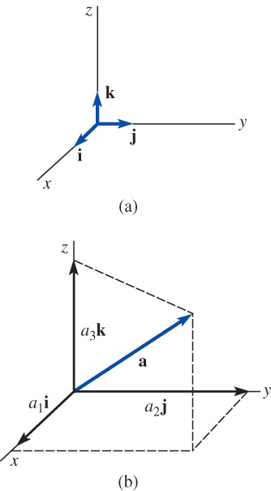
\(\mathbf{i}\), \(~\mathbf{j}\), and \(~\mathbf{k}\) vectors
\(\begin{aligned} \mathbf{a} &= \left \langle a_1, a_2, a_3 \right \rangle \\ &= \left \langle a_1, 0, 0 \right \rangle +\left \langle 0, a_2, 0 \right \rangle +\left \langle 0, 0, a_3 \right \rangle \\ &= a_1 \left \langle 1, 0, 0 \right \rangle +a_2 \left \langle 0, 1, 0 \right \rangle +a_3 \left \langle 0, 0, 1 \right \rangle \\ &= a_1 \mathbf{i} +a_2 \mathbf{j} +a_3 \mathbf{k} \end{aligned}\)
Octants
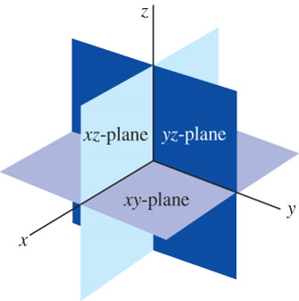
\(~\)
| Axes | Coordinates | Plane | Coordinates |
|---|---|---|---|
| \(x\) | \((a, 0, 0)\) | \(xy\) | \((a, b, 0)\) |
| \(y\) | \((0, b, 0)\) | \(yz\) | \((0, b, c)\) |
| \(z\) | \((0, 0, c)\) | \(xz\) | \((a, 0, c)\) |
\(~\)
\(~\)
Let \(\,\mathbf{a}=\left \langle a_1, a_2, a_3 \right \rangle\,\) and \(\,\mathbf{b}=\left \langle b_1, b_2, b_3 \right \rangle\) be vectors in \(\mathbb{R}^3\)
- Equality: \(~\mathbf{a} =\mathbf{b}~\text{ if and only if }~a_1 =b_1, \;a_2=b_2, \;a_3=b_3\)
- Addition: \(~\mathbf{a} +\mathbf{b} =\left \langle a_1 +b_1, a_2 +b_2, a_3 +b_3 \right \rangle\)
- Scalar multiplication: \(~k\mathbf{a} =\left \langle k a_1, k a_2, k a_3 \right \rangle\)
- Negative: \(-\mathbf{b} =(-1)\mathbf{b} =\left \langle -b_1, -b_2, -b_3 \right \rangle\)
- Subtraction: \(~\mathbf{a} -\mathbf{b} = \mathbf{a} +(-1)\mathbf{b} =\left \langle a_1 -b_1, a_2 -b_2, a_3 -b_3 \right \rangle\)
- Zero vector: \(~\mathbf{0} =\left \langle 0, 0, 0 \right \rangle\)
- Magnitude: \(~\left \| \mathbf{a} \right \| =\sqrt{a_1^2 +a_2^2 +a_3^2}\)
\(~\)
Example \(\,\) Describe the locus of points \(P(x, y, z)\) that satisfy the given equations
\(xyz=0\)
\((x+1)^2 +(y-2)^2 +(z+3)^2 = 0\)
\((x-2)(z-8)=0\)
\(z^2 -25=0\)
\(x=y=z\)
\(~\)
10.3 Dot Product (Inner or Scalar Product)
The dot product of \(\mathbf{a}=\left \langle a_1, a_2, a_3 \right \rangle\) and \(\mathbf{b}=\left \langle b_1, b_2, b_3 \right \rangle\) is
\(\phantom{x}\mathbf{a} \cdot \mathbf{b} = a_1 b_1 + a_2 b_2 + a_3 b_3\)
Properties of the Dot Product
- \(\mathbf{a}\cdot\mathbf{b} = 0~\) if \(~\mathbf{a}=\mathbf{0}~\) or \(~\mathbf{b}=\mathbf{0}\)
- \(\mathbf{a}\cdot\mathbf{b} = \mathbf{b}\cdot\mathbf{a}\)
- \(\mathbf{a}\cdot(\mathbf{b} +\mathbf{c}) = \mathbf{a}\cdot\mathbf{b} +\mathbf{a}\cdot\mathbf{c}\)
- \(\mathbf{a}\cdot(k\mathbf{b}) = (k\mathbf{a})\cdot\mathbf{b} =k(\mathbf{a}\cdot\mathbf{b})\)
- \(\mathbf{a}\cdot\mathbf{a} \geq 0\)
- \(\mathbf{a}\cdot\mathbf{a} =\left \| \mathbf{a} \right \|^2\)
Alternative Form
The dot product of two vectors \(\mathbf{a}\) and \(\mathbf{b}\) is
\(\phantom{xx}\mathbf{a}\cdot\mathbf{b} =\left\| \mathbf{a} \right\| \left\| \mathbf{b} \right\| \cos\theta\)
where \(\theta\) is the angle between the vectors, \(\,0 \leq \theta \leq \pi\)
Angle between two vectors
\(\displaystyle\phantom{xx}\cos\theta = \frac{a_1 b_1 +a_2 b_2 + a_3 b_3}{\left\| \mathbf{a}\right\| \left\| \mathbf{b}\right\|}\)
- Direction cosines
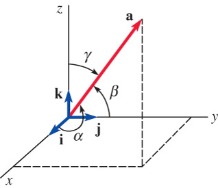
\(\phantom{xx}\displaystyle\cos\alpha=\frac{a_1}{\left\|\mathbf{a}\right\|}\), \(~\displaystyle\cos\beta=\frac{a_2}{\left\|\mathbf{a}\right\|}\), \(~\displaystyle\cos\gamma=\frac{a_3}{\left\|\mathbf{a}\right\|}\)
Orthogonal vectors
Two nonzero vectors \(\mathbf{a}\) and \(\mathbf{b}\) are orthogonal if and only if \(~\mathbf{a}\cdot\mathbf{b}=0\)
Component of \(\mathbf{a}\) on \(\mathbf{b}\)
To find the component of \(\mathbf{a}\) on a vector \(\mathbf{b}\), \(~\)we dot \(\mathbf{a}\) with a unit vector in the direction of \(\mathbf{b}\)
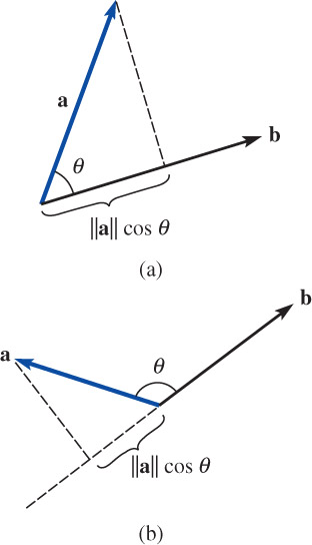
\[\text{comp}_{\mathbf{b}} \mathbf{a} =\left\| \mathbf{a} \right\| \cos\theta =\left\| \mathbf{a} \right\| \cos\theta \frac{\left\| \mathbf{b} \right\|}{\left\| \mathbf{b} \right\|} =\frac{\mathbf{a}\cdot\mathbf{b}}{\left\| \mathbf{b} \right\|} =\mathbf{a} \cdot\frac{\mathbf{b}}{\left\| \mathbf{b} \right\|}\]
Projection of \(\mathbf{a}\) onto \(\mathbf{b}\)
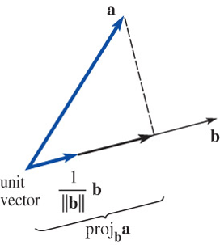
\[\text{proj}_{\mathbf{b}} \mathbf{a} = \left(\text{comp}_{\mathbf{b}} \mathbf{a} \right) \left(\frac{\mathbf{b}}{\left\| \mathbf{b} \right\|} \right)=\color{red}{\left(\frac{\mathbf{a}\cdot\mathbf{b}}{\mathbf{b}\cdot\mathbf{b}}\right) \mathbf{b}}\]
\(~\)
Example \(\,\) Verify that the vector \(\displaystyle \mathbf{c}=\mathbf{b} - \left(\frac{\mathbf{a} \cdot \mathbf{b}}{\mathbf{a} \cdot \mathbf{a}}\right) \mathbf{a}\,\) is orthogonal to the vector \(\mathbf{a}\)
\(~\)
Example \(\,\) In the methane molecule \(\mathrm{CH}_4\), the hydrogen atoms are located at the four vertices of a regular tetrahedron. The distance between the center of a hydrogen atom and the center of a carbon atom is 1.10 angstroms, and the hydrogen-carbon-hydrogen bond angle is \(\,\theta=109.5^\circ\). Using vector methods only, find the distance between two hydrogen atoms
\(~\)
10.4 Cross Product
Cross product of Two vectors
\(\phantom{xx}\mathbf{a} \times \mathbf{b} =\left|\begin{matrix} \mathbf{i} & \mathbf{j} & \mathbf{k}\\ a_1 & a_2 & a_3\\ b_1 & b_2 & b_3 \end{matrix}\right| =\left|\begin{matrix} a_2 & a_3\\ b_2 & b_3 \end{matrix}\right| \mathbf{i} -\left|\begin{matrix} a_1 & a_3\\ b_1 & b_3 \end{matrix}\right| \mathbf{j} +\left|\begin{matrix} a_1 & a_2\\ b_1 & b_2 \end{matrix}\right| \mathbf{k}\)
Alternative Form and Magnitude of the Cross Product
\(\phantom{xx}\mathbf{a}\times\mathbf{b} =(\left\| \mathbf{a} \right\| \left\| \mathbf{b} \right\| \sin\theta)\,\mathbf{n} =\left\| \mathbf{a}\times\mathbf{b} \right\| \mathbf{n}\)
Right-Hand Rule
The vectors \(\mathbf{a}\), \(\mathbf{b}\), and \(~\mathbf{a}\times\mathbf{b}~\) form a right-hand system:
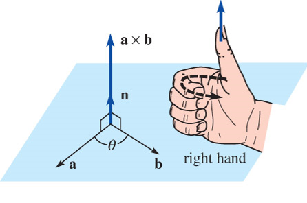
Parallel Vectors
Two nonzero vectors \(\mathbf{a}\) and \(\mathbf{b}\) are parallel if and only if \(~\mathbf{a}\times\mathbf{b}=\mathbf{0}\)
Properties of the Cross Product \(~\)
- \(\mathbf{a}\times\mathbf{b} = \mathbf{0}~\) if \(~\mathbf{a}=\mathbf{0}~\) or \(~\mathbf{b}=\mathbf{0}\)
- \(\mathbf{a}\times\mathbf{b} =-\mathbf{b}\times\mathbf{a}\)
- \(\mathbf{a}\times(\mathbf{b} +\mathbf{c}) = (\mathbf{a}\times\mathbf{b}) +(\mathbf{a}\times\mathbf{c})\)
- \((\mathbf{a} +\mathbf{b}) \times\mathbf{c} = (\mathbf{a}\times\mathbf{c}) +(\mathbf{b}\times\mathbf{c})\)
- \(\mathbf{a}\times(k\mathbf{b}) = (k\mathbf{a})\times\mathbf{b} =k(\mathbf{a}\times\mathbf{b})\)
- \(\mathbf{a}\times\mathbf{a} =\mathbf{0}\)
- \(\mathbf{a}\cdot(\mathbf{a}\times\mathbf{b})=0\)
- \(\mathbf{b}\cdot(\mathbf{a}\times\mathbf{b})=0\)
Areas of a parallelogram and a Trianlge
\(\text{(a)}\) \(~A =\left\|\mathbf{a} \times \mathbf{b} \right\|\)
\(\text{(b)}\) \(~A =\frac{1}{2}\left\|\mathbf{a} \times \mathbf{b} \right\|\)
\(~\)
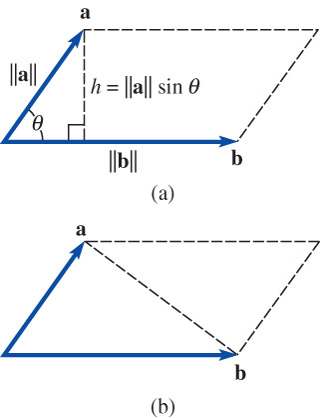
Volume of a Parallelepiped
\(\phantom{xx}V=\left| \mathbf{a} \cdot (\mathbf{b} \times \mathbf{c})\right|\)
\(~\)
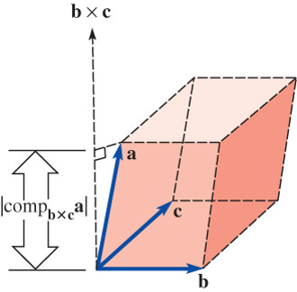
Special Products
\(\phantom{xx}\mathbf{a} \cdot (\mathbf{b} \times \mathbf{c}) = \left|\begin{matrix} a_1 & a_2 & a_3\\ b_1 & b_2 & b_3\\ c_1 & c_2 & c_3 \end{matrix}\right| = (\mathbf{a} \times \mathbf{b}) \cdot \mathbf{c}\)
\(~\)
\(\phantom{xx}\mathbf{a} \times (\mathbf{b} \times \mathbf{c}) = (\mathbf{a} \cdot \mathbf{c}) \mathbf{b} -(\mathbf{a} \cdot \mathbf{b}) \mathbf{c}\)
\(~\)
Example \(\,\) Prove or disprove
\(~\mathbf{a} \times (\mathbf{b} \times \mathbf{c}) = (\mathbf{a} \cdot \mathbf{c}) \mathbf{b} -(\mathbf{a} \cdot \mathbf{b}) \mathbf{c}\)
\(~\mathbf{a} \times (\mathbf{b} \times \mathbf{c}) =(\mathbf{a} \times \mathbf{b}) \times \mathbf{c}\)
\(~\mathbf{a} \times (\mathbf{b} \times \mathbf{c}) +\mathbf{b} \times (\mathbf{c} \times \mathbf{a}) +\mathbf{c} \times (\mathbf{a} \times \mathbf{b})=\mathbf{0}\)
Lagrange’s identity \(\| \mathbf{a}\times\mathbf{b}\|^2 = \|\mathbf{a}\|^2 \|\mathbf{b}\|^2 - (\mathbf{a}\cdot\mathbf{b})^2\)
\(~\)
10.5 Lines and Planes in 3-Space
Lines
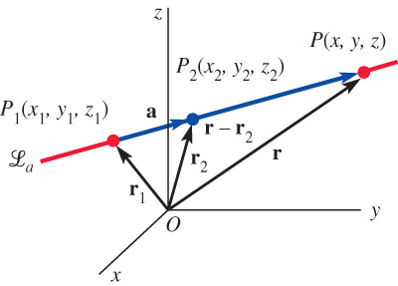
\[ \begin{aligned} \mathbf{r} -\mathbf{r}_2 &= t(\mathbf{r}_2 - \mathbf{r}_1) = t\mathbf{a} \\ &\Rightarrow \;\displaystyle t = \frac{x - x_2}{a_1} = \frac{y - y_2}{a_2} = \frac{z - z_2}{a_3} \end{aligned}\]
Planes
If the normal vector is \(\mathbf{n}=n_1\mathbf{i} +n_2\mathbf{j} +n_3\mathbf{k}\), \(~\)then
\[ \begin{aligned} \mathbf{n}&\cdot(\mathbf{r} -\mathbf{r}_1) =0 \\ &\Rightarrow~ n_1(x -x_1) +n_2 (y -y_1) +n_3(z- z_1)=0 \end{aligned} \]
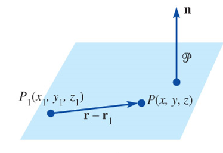
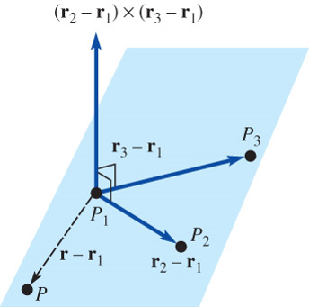
\(~\)
Example \(\,\) Find parametric equation for the line that contains \((-4, 1, 7)\) and is perpendicular to the plane \[-7x+2y+3z=1\]
\(~\)
Example \(\,\) Find parametric equations for the line of intersection of the given planes
\[ \begin{aligned} 5x - 4y -9z &= 8\\ x + 4y +3z &= 4 \end{aligned}\]
\(~\)
Example \(\,\) Find an equation of the plane that contains the given line and is orthogonal to the indicated plane
\[\frac{2-x}{3}=\frac{y+2}{5}=\frac{z-8}{2}; \quad 2x - 4y-z + 16=0\]
\(~\)
10.6 Vector Spaces
\(n\)-Space
- A vector in n-space is any ordered \(n\)-tuple \(\,\mathbf{a}=\left\langle a_1, a_2, \cdots, a_n \right\rangle\) of real numbers called the components of \(~\mathbf{a}\)
- The set of all vectors in \(n\)-space is denoted by \(\mathbb{R}^n\)
- The component definitions in 3-space carry over to \(\mathbb{R}^n\)
in a natural way
The standard dot or inner product of two \(n\)-vectors is the real number defined by
\(\phantom{xx}\begin{aligned} \mathbf{a} \cdot \mathbf{b} &= \left\langle a_1, a_2, \cdots, a_n \right\rangle \cdot \left\langle b_1, b_2, \cdots, b_n \right\rangle \\ &= a_1 b_1 +a_2 b_2 + \cdots + a_n b_n \end{aligned}\)
Two nonzero vectors \(\mathbf{a}\) and \(\mathbf{b}\) in \(\mathbb{R}^n\) are said to be orthogonal if and only if \(~\mathbf{a} \cdot \mathbf{b} = 0\)
Vector Space
Let \(V\) be a set of elements on which two operations called vector addition and scalar multiplication are defined. Then \(V\) is said to be a vector space if the following 10 properties are satisfied
Axioms for Vector Addition
If \(\mathbf{x}\) and \(\mathbf{y}\) are in \(V\), \(~\)then \(\mathbf{x} +\mathbf{y}\) is in \(V\)
For all \(\mathbf{x}\), \(\mathbf{y}\) in \(V\), \(~\)\(\mathbf{x} +\mathbf{y} = \mathbf{y} +\mathbf{x}\)
For all \(\mathbf{x}\), \(\mathbf{y}\), \(\mathbf{z}\) in \(V\), \(~\)\(\mathbf{x} +(\mathbf{y} +\mathbf{z}) = (\mathbf{x} +\mathbf{y}) +\mathbf{z}\)
There is a unique vector \(\mathbf{0}\) in \(V\) such that \(~\)\(\mathbf{0} +\mathbf{x} = \mathbf{x} +\mathbf{0}\)
For each \(\mathbf{x}\) in \(V\), \(~\)there exists a vector \(=\mathbf{x}~\) such that \(\mathbf{x} +(-\mathbf{x}) = (-\mathbf{x}) +\mathbf{x} =\mathbf{0}\)
Axioms for Scalar Multiplication
If \(k\) is any scalar and \(\mathbf{x}\) is in \(V\), \(~\)then \(~k\mathbf{x}~\) is in \(V\)
\(k(\mathbf{x} +\mathbf{y}) =k\mathbf{x} + k\mathbf{y}\)
\((k_1 +k_2)\mathbf{x} =k_1\mathbf{x} + k_2\mathbf{x}\)
\(k_1(k_2\mathbf{x})=(k_2k_2)\mathbf{x}\)
\(1\mathbf{x}=\mathbf{x}\)
Here are some important vector spaces:
The set \(\mathbb{R}\) of real numbers
The set \(\mathbb{R}^2\) of ordered pairs
The set \(\mathbb{R}^3\) of ordered triples
The set \(\mathbb{R}^n\) of ordered \(n\)-tuples
The set \(P_n\) of polynomials of degree less than or equal to \(n\)
The set \(P\) of all polynomials
The set of real-valued functions \(~f\) defined on the set \(\mathbb{R}\)
The set \(C[a,b]\) of real-valued functions \(~f\) continuous on the closed interval \([a,b]\)
The set \(C(-\infty,\infty)\) of real-valued functions \(~f\) continuous on the set \(\mathbb{R}\)
The set \(C^n[a,b]\) of all real-valued functions \(~f\), \(\,\) for which \(f\), \(f'\), \(f''\), \(\cdots\), \(f^{(n)}\) exist and are continuous on the closed interval \([a,b]\)
\(~\)
Example \(\,\) Consider the set \(V\) of positive real numbers. If \(x\) and \(y\) denote positive real numbers, then we write vectors in \(V\) as \(\mathbf{x}=x~\) and \(~\mathbf{y}=y\)
Now, \(~\) addition of vectors is defined by
\(\phantom{xx}\mathbf{x} +\mathbf{y} =xy\)
and scalar multiplication is defined by
\(\phantom{xx}k\mathbf{x}=x^k\)
Determine whether \(V\) is a vector space
\(~\)
Subspace
A nonempty subset \(W\) of a vector space \(V\) is a subspace of \(V~\) if and only if \(~W\) is closed under vector addition and scalar multiplication defined on \(V\):
- If \(\mathbf{x}\) and \(\mathbf{y}\) are in \(W\), \(~\)then \(\mathbf{x} +\mathbf{y}\) is in \(W\)
- If \(\mathbf{x}\) is in \(W\) and \(k\) is any scalar, \(~\)then \(k\mathbf{x}\) is in \(W\)
Linear Independence
A set of vectors \(\left\{ \mathbf{x}_1, \mathbf{x}_2, \cdots, \mathbf{x}_n \right\}\) is said to be linearly indpenedent if the only constants satisfying the equation
\[k_1\mathbf{x}_1 +k_2\mathbf{x}_2 +\cdots +k_n\mathbf{x}_n=\mathbf{0}\]
are \(k_1=k_2=\cdots=k_n=0\). If the set of vectors is not linearly indpenedent, \(~\)then it is said to be linearly dependent
Basis
Consider a set of vectors \(B=\left\{\mathbf{x}_1, \mathbf{x}_2,\cdots,\mathbf{x}_n\right\}\,\) in a vector space \(V\). \(~\)If the set \(\,B\,\) is linearly independent and if every vector in \(V\) can be expressed as a linear combination of these vectors, \(~\)then \(B\) is said to be a basis in \(V\)
Dimension
The number of vectors in a basis \(\,B\,\) for a vector space \(~V\) is said to be the dimension of the space
Span
If \(S\) denotes any set of vectors \(\left\{\mathbf{x}_1, \mathbf{x}_2,\cdots,\mathbf{x}_n\right\}\) in a vector space \(V\), \(\,\)then the set of all linear combinations of the vector \(\mathbf{x}_1,\mathbf{x}_2,\cdots,\mathbf{x}_n\) in \(S\),
\[\left\{ k_1\mathbf{x}_1 +k_2\mathbf{x}_2+ \cdots+k_n\mathbf{x}_n\right\}\]
where the \(k_i\) are scalars, \(\,\)is called the span of the vectors and written \(\mathrm{span}(S)\) or \(\mathrm{span}(\mathbf{x}_1,\mathbf{x}_2,\cdots,\mathbf{x}_n)\)
\(~\)
If \(\,V=\text{span}(S)\), \(\,\)then we say that \(\,S\,\) is a spanning set for the vector space \(V\), \(\,\)or that \(\,S\,\) spans \(\,V\)
\(~\)
Example \(\,\) Determine whether the given set is a vector space:
The set of complex numbers \(a + bi\), \(\,\)where \(i^2=-1\), \(\,\)addition and scalar multiplication defined by
\[ \begin{aligned} (a_1 + b_1 i) +(a_2 +b_2 i) &= (a_1 +a_2) +(b_1 +b_2)i \\ k(a+bi) &= ka +kb i \end{aligned}\]
where \(k\) is a real number
The set of arrays of real numbers \(\begin{pmatrix} a_{11} & a_{12} \\ a_{21} & a_{22} \end{pmatrix}\), \(~\) addition and scalar multiplication defined by
\[ \begin{aligned} \begin{pmatrix} a_{11} & a_{12} \\ a_{21} & a_{22} \end{pmatrix} + \begin{pmatrix} b_{11} & b_{12} \\ b_{21} & b_{22} \end{pmatrix} &= \begin{pmatrix} a_{12} +b_{12} & a_{11}+b_{11} \\ a_{22} +b_{22} & a_{21}+b_{21} \end{pmatrix}\\ k\begin{pmatrix} a_{11} & a_{12} \\ a_{21} & a_{22} \end{pmatrix}&= \begin{pmatrix} ka_{11} & ka_{12} \\ ka_{21} & ka_{22} \end{pmatrix} \end{aligned}\]
\(~\)
10.7 Gram-Schmidt Orthogonalization Process
Every vector \(\mathbf{u}\) in \(\mathbb{R}^n\) can be written as a linear combination of the vectors in the standard basis \(B=\left\{ \mathbf{e}_1, \mathbf{e}_2, \cdots, \mathbf{e}_n \right\}\):
\[ \begin{aligned} \mathbf{e}_1 &=\left\langle 1,0,0,\cdots,0 \right\rangle \\ \mathbf{e}_2 &=\left\langle 0,1,0,\cdots,0 \right\rangle \\ &\;\;\vdots \\ \mathbf{e}_n &=\left\langle 0,0,0,\cdots,1 \right\rangle \end{aligned}\]
This standard basis \(B=\left\{ \mathbf{e}_1, \mathbf{e}_2, \cdots, \mathbf{e}_n \right\}\,\) is also an example of an orthonormal basis
\[\mathbf{e}_i \cdot \mathbf{e}_j = 0, \,i \neq j ~\text{ and}~ \left\| \mathbf{e}_i \right\|=1, ~i=1,2,\cdots,n\]
Coordinates Relative to an Orthonormal Basis
Suppose \(B=\left\{ \mathbf{w}_1, \mathbf{w}_2, \cdots, \mathbf{w}_n \right\}\) is an orthonormal basis for \(\mathbb{R}^n\). \(\,\)If \(\mathbf{u}\) is any vector in \(\mathbb{R}^n\), \(~\)then
\[\mathbf{u} = (\mathbf{u}\cdot\mathbf{w}_1)\mathbf{w}_1 +(\mathbf{u}\cdot\mathbf{w}_2)\mathbf{w}_2 + \cdots +(\mathbf{u}\cdot\mathbf{w}_n)\mathbf{w}_n\]
Constructing an Orthogonal Basis for \(\mathbb{R}^2\)
\[\begin{aligned} \mathbf{v}_1 &= \mathbf{u}_1 \\ \mathbf{v}_2 &= \mathbf{u}_2 -\left( \frac{\mathbf{u}_2 \cdot \mathbf{v}_1}{\mathbf{v}_1 \cdot \mathbf{v}_1}\right) \mathbf{v}_1\end{aligned}\]
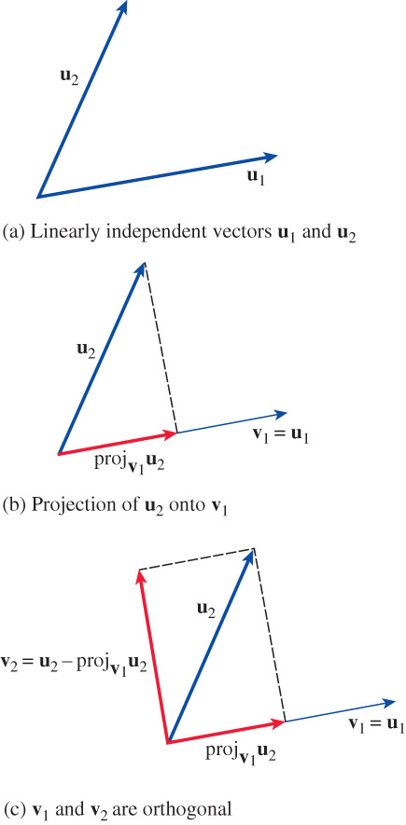
Constructing an Orthogonal Basis for \(\mathbb{R}^3\)
\[\begin{aligned} \mathbf{v}_1 &= \mathbf{u}_1 \\ \mathbf{v}_2 &= \mathbf{u}_2 -\left( \frac{\mathbf{u}_2 \cdot \mathbf{v}_1}{\mathbf{v}_1 \cdot \mathbf{v}_1}\right) \mathbf{v}_1 \\ \mathbf{v}_3 &= \mathbf{u}_3 -\left( \frac{\mathbf{u}_3 \cdot \mathbf{v}_1}{\mathbf{v}_1 \cdot \mathbf{v}_1}\right) \mathbf{v}_1 -\left( \frac{\mathbf{u}_3 \cdot \mathbf{v}_2}{\mathbf{v}_2 \cdot \mathbf{v}_2}\right) \mathbf{v}_2 \end{aligned}\]
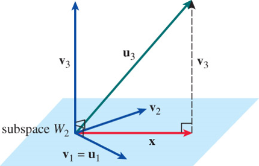
Gram-Schmidt Orthogonalization Process
Let \(\,B=\left\{ \mathbf{u}_1, \mathbf{u}_2, \cdots, \mathbf{u}_m \right\}\), \(~m \leq n\), \(~\)be a basis for a subspace \(W_m\) of \(~\mathbb{R}^n\). \(\,\)Then \(B'=\left\{ \mathbf{v}_1, \mathbf{v}_2, \cdots, \mathbf{v}_m \right\}\) , \(\,\)where
\[ \begin{aligned} \mathbf{v}_1 & = \mathbf{u}_1 \\ \mathbf{v}_2 & = \mathbf{u}_2 -\left( \frac{\mathbf{u}_2 \cdot \mathbf{v}_1}{\mathbf{v}_1 \cdot \mathbf{v}_1}\right) \mathbf{v}_1 \\ \mathbf{v}_3 & = \mathbf{u}_3 -\left( \frac{\mathbf{u}_3 \cdot \mathbf{v}_1}{\mathbf{v}_1 \cdot \mathbf{v}_1}\right) \mathbf{v}_1 -\left( \frac{\mathbf{u}_3 \cdot \mathbf{v}_2}{\mathbf{v}_2 \cdot \mathbf{v}_2}\right) \mathbf{v}_2 \\ &\;\vdots \\ \mathbf{v}_m & = \mathbf{u}_m -\left( \frac{\mathbf{u}_m \cdot \mathbf{v}_1}{\mathbf{v}_1 \cdot \mathbf{v}_1}\right) \mathbf{v}_1 -\left( \frac{\mathbf{u}_m \cdot \mathbf{v}_2}{\mathbf{v}_2 \cdot \mathbf{v}_2}\right) \mathbf{v}_2 -\cdots -\left( \frac{\mathbf{u}_m \cdot \mathbf{v}_{m-1}}{\mathbf{v}_{m-1} \cdot \mathbf{v}_{m-1}}\right) \mathbf{v}_{m-1} \end{aligned}\]
is an orthogonal basis for \(W_m\)
An orthonormal basis for \(W_m\) is
\[B''=\left\{ \mathbf{w}_1, \mathbf{w}_2, \cdots, \mathbf{w}_m \right\}=\left\{ \frac{1}{\left\| \mathbf{v}_1 \right\|} \mathbf{v}_1, \frac{1}{\left\| \mathbf{v}_2 \right\|} \mathbf{v}_2, \cdots, \frac{1}{\left\| \mathbf{v}_m \right\|} \mathbf{v}_m \right\}\]
\(~\)
Example \(\,\)An inner product defined on the vector space \(P_2\) of all polynomials of degree less than or equal to \(2\), is given by
\[\left\langle p, q \right \rangle =\int_{-1}^{1} p(x)\, q(x)\, dx\]
Use the Gram-Schmidt orthogonalization process to transform the given basis for \(P_2\) into an orthogonal basis \(B'\)
\[B = \{1, x, x^2\}\]
\(~\)
Worked Exercises
1. \(~\) Determine whether the given vectors are linearly independent or linearly dependent:
\[1, (x+1), (x+1)^2, x^2 \text{ in } P_2\]
Solution
Step 1: \(~\) Understand the space \(P_2\)
The vector space \(P_2\) consists of all real polynomials of degree at most 2. So any element in \(P_2\) has the form:
\[a_0 + a_1 x + a_2 x^2\]
That means the dimension of \(P_2\) is 3. Therefore, any set of more than 3 vectors in \(P_2\) must be linearly dependent
Step 2: \(~\) Count the number of vectors
We are given 4 vectors:
\[1, \quad (x+1), \quad (x+1)^2, \quad x^2\]
Since \(\dim P_2 = 3\), and we are given 4 vectors, they must be linearly dependent
(Optional) Step 3: \(~\) Verify dependence explicitly
To see this more concretely, write each vector in terms of the standard basis \(\{1, x, x^2\}\):
- \(1 = 1 + 0x + 0x^2 \Rightarrow (1, 0, 0)\)
- \(x+1 = 1x + 1 \Rightarrow (1, 1, 0)\)
- \((x+1)^2 = x^2 + 2x + 1 \Rightarrow (1, 2, 1)\)
- \(x^2 = x^2 \Rightarrow (0, 0, 1)\)
Write these as column vectors:
\[\begin{bmatrix} 1\\0\\0 \end{bmatrix}, \quad \begin{bmatrix} 1\\1\\0 \end{bmatrix}, \quad \begin{bmatrix} 1\\2\\1 \end{bmatrix}, \quad \begin{bmatrix} 0\\0\\1 \end{bmatrix}\]
You can now see, for instance:
\[(x+1)^2 = x^2 + 2(x) + 1 = x^2 + 2(x+1) - 1 \Rightarrow (x+1)^2 - 2(x+1) + x^2 - 1 = 0\]
So there is a nontrivial linear combination:
\[1\cdot(x+1)^2 - 2\cdot(x+1) + 1\cdot x^2 - 1 = 0\]
\(~\)
2. \(~\) Explain why \(\displaystyle f(x)=\frac{x}{x^2 +4x +3}\) is a vector in \(C[0, 3]\) but not a vector in \(C[-3,0]\)
Solution
Step 1: \(~\) Understand the vector space \(C[a,b]\)
- \(C[a,b]\) is the vector space of all continuous real-valued functions defined on the interval \([a,b]\)
- So, a function \(f(x)\) is a vector in \(C[a,b]\) if and only if it is continuous on the entire interval \([a,b]\)
Step 2: \(~\) Analyze \(f(x) = \dfrac{x}{x^2 + 4x + 3}\)
Factor the denominator:
\[x^2 + 4x + 3 = (x+1)(x+3)\]
So the function becomes:
\[f(x) = \frac{x}{(x+1)(x+3)}\]
This function is undefined at \(x = -1\) and \(x = -3\), since the denominator becomes 0 at those points.
Step 3: \(~\) Behavior on \([0, 3]\)
- The interval \([0,3]\) lies entirely to the right of both singularities \(x = -1\) and \(x = -3\)
- On this interval, \(f(x)\) is:
- Defined (denominator never zero),
- Continuous (since it’s a rational function with no discontinuities on this domain)
Step 4: \(~\) Behavior on \([-3, 0]\)
- This interval includes the point \(x = -1\), where the denominator becomes \(0\).
- At \(x = -1\), the function is undefined, so it is not continuous on the entire interval
Conclusion:
\(f(x) \in C[0,3]\) — it is a continuous function on that interval, so it is a vector in \(C[0,3]\)
\(f(x) \notin C[-3,0]\) — because it is not defined (and hence not continuous) at \(x = -1\), so it is not a vector in \(C[-3,0]\)
\(~\)
3. \(~\) The given vectors span a subspace \(W\) of \(\mathbb{R}^4\). Use the Gram-Schmidt orthogonalization process to construct an orthonormal basis for the subspace
\[\mathbf{u}_1=\left \langle 4, 0, 2, -1 \right \rangle, \; \mathbf{u}_2=\left \langle 2, 1,-1,1 \right \rangle, \;\text{and}\; \mathbf{u}_3=\left \langle 1,1,-1,0 \right \rangle\]
Solution
\[\begin{aligned} \mathbf{v}_1 &= \mathbf{u}_3=\left \langle 1,1,-1,0 \right \rangle \\ \mathbf{v}_2 &= \mathbf{u}_2 -\left( \frac{\mathbf{u}_2 \cdot \mathbf{v}_1}{\mathbf{v}_1 \cdot \mathbf{v}_1}\right) \mathbf{v}_1 \\ &= \left \langle 2, 1,-1,1 \right \rangle -\frac{4}{3}\left \langle 1,1,-1,0 \right \rangle = \frac{1}{3} \left \langle 2,-1,1,3 \right \rangle \\ &\Rightarrow \; \left \langle 2,-1,1,3 \right \rangle\\ \mathbf{v}_3 &= \mathbf{u}_1 -\left( \frac{\mathbf{u}_1 \cdot \mathbf{v}_1}{\mathbf{v}_1 \cdot \mathbf{v}_1}\right) \mathbf{v}_1 -\left( \frac{\mathbf{u}_1 \cdot \mathbf{v}_2}{\mathbf{v}_2 \cdot \mathbf{v}_2}\right) \mathbf{v}_2 \\ &= \left \langle 4, 0, 2, -1 \right \rangle -\frac{2}{3} \left \langle 1, 1, -1, 0 \right \rangle -\frac{7}{15} \left \langle 2, -1, 1, 3 \right \rangle \\ &= \frac{1}{5} \left \langle 12, -1, 11, -12 \right \rangle \;\Rightarrow\; \left\langle 12, -1, 11, -12 \right \rangle \\ &\Downarrow \\ \mathbf{w}_1 &= \frac{1}{\sqrt{3}}\left \langle 1,1,-1,0 \right \rangle \\ \mathbf{w}_2 &= \frac{1}{\sqrt{15}}\left \langle 2,-1,1,3 \right \rangle \\ \mathbf{w}_3 &= \frac{1}{\sqrt{410}} \left\langle 12, -1, 11, -12 \right \rangle \end{aligned}\]
\(~\)
4. \(~\) The set of vectors \(\{ \mathbf{u}_1, \mathbf{u}_2, \mathbf{u}_3 \}\), where
\[\mathbf{u}_1=\left \langle 1, 1, 3 \right \rangle, \; \mathbf{u}_2=\left \langle 1,4,1 \right \rangle, \;\text{and}\; \mathbf{u}_3=\left \langle 1,10,-3 \right \rangle\]
is linearly dependent in \(\mathbb{R}^3\). Carry out the Gram-Schmidt orthogonalization process and then discuss that result
Solution
\[\begin{aligned} \mathbf{v}_1 &= \mathbf{u}_1=\left \langle 1,1,3\right \rangle \\ \mathbf{v}_2 &= \mathbf{u}_2 -\left( \frac{\mathbf{u}_2 \cdot \mathbf{v}_1}{\mathbf{v}_1 \cdot \mathbf{v}_1}\right) \mathbf{v}_1 = \left \langle 1,4,1 \right \rangle -\frac{1+4+3}{1+1+9}\left \langle 1,1,3 \right \rangle \\ &= \frac{1}{11} \left \langle 3,36,-13 \right \rangle \;\;\Rightarrow \;\; \left \langle 3,36,-13 \right \rangle\\ \mathbf{v}_3 &= \mathbf{u}_1 -\left( \frac{\mathbf{u}_1 \cdot \mathbf{v}_1}{\mathbf{v}_1 \cdot \mathbf{v}_1}\right) \mathbf{v}_1 -\left( \frac{\mathbf{u}_1 \cdot \mathbf{v}_2}{\mathbf{v}_2 \cdot \mathbf{v}_2}\right) \mathbf{v}_2 \\ &= \left \langle 1,10,-3 \right \rangle -\frac{1+10-9}{1+1+9} \left \langle 1, 1, 3 \right \rangle -\frac{93+360+39}{9+36^2+13^2} \left \langle 3,36,-13 \right \rangle \\ &= \left\langle 0, 0, 0 \right \rangle \\ &\Downarrow \\ \mathbf{w}_1 &= \frac{1}{\sqrt{11}}\left \langle 1,1,3 \right \rangle \\ \mathbf{w}_2 &= \frac{1}{\sqrt{1474}}\left \langle 3,36,-13 \right \rangle \end{aligned}\]